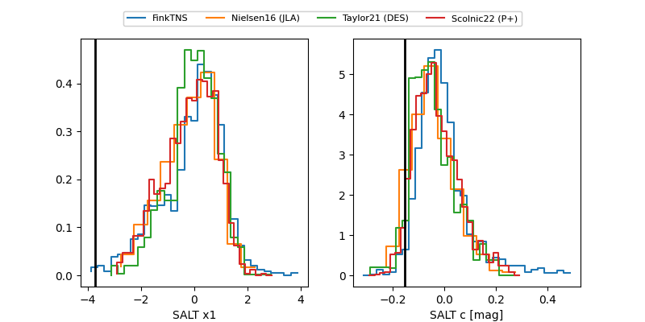

FINK: ZTF25absbohn
Lasair: ZTF25absbohn
ALeRCE: ZTF25absbohn
TNS: 2025yad
YSE: 2025yad
ZTF25absbohn (ztf,fink)
2025yad (tns,yse)
equatorial (ra, dec) = (263.1138,+18.14120)
galactic (l, b) = (41.2464,+25.32216)

last atlasc=18.76, atlaso=19.09, ztfg=18.80, ztfr=18.90
3 atlasc, 1 atlaso, 2 ztfg, 2 ztfr detections